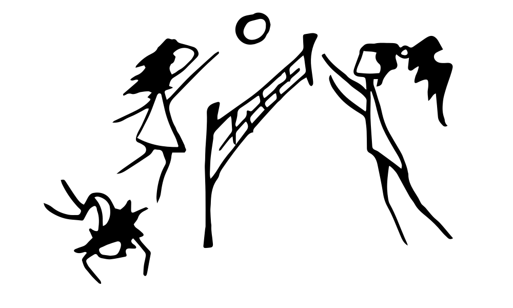
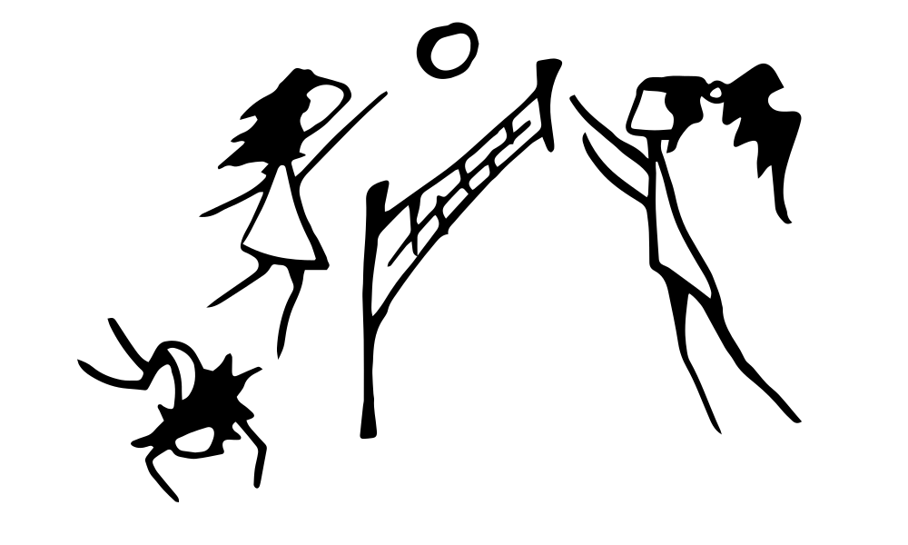

appart code snippets
v2024.2.20 keiko
u2024.7.17
About
Frontend code snippets for copy-paste features without dependencies. Check the «view source» for the html markup. Skroll down for the rest.
appart means mix of engineering (app) and art
Higlighted code is contenteditable with live changes
 
